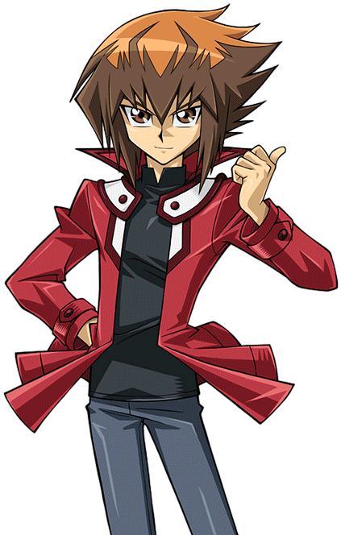
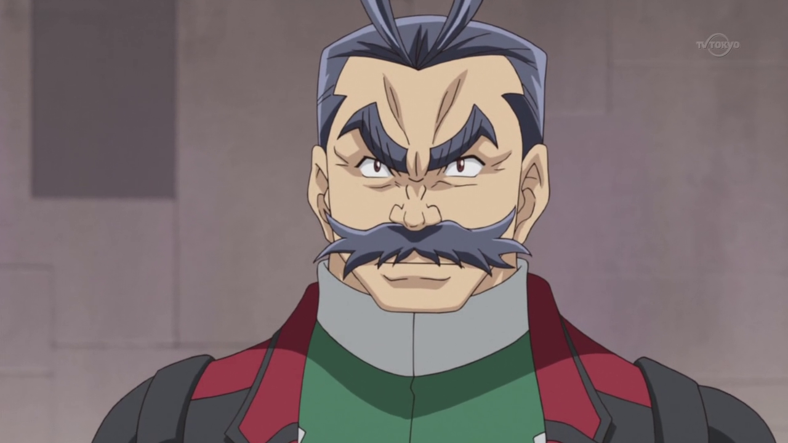
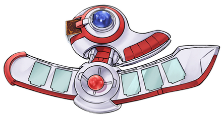
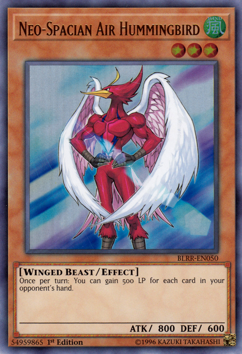

wondered what the deal with him was.
wondered what the deal with him was.
Instructor: Hey ! Wake up slacker ! I'm talking to you !
The whole class was startled by their instructor's angry tones. They could see why. One of the students, a young boy wearing a red jacket, was found laying his head down between his arms. He appeared to have been napping in class, something the teacher at the time didn't approve of. When he yelled, the boy snapped to attention. He looked startled.
???: Uh… !? what time is it ?
The boy asked as he rubbed his eyes.
Instructor: Class started ten minutes ago, and you decided to snooze during my opening lecture ! How disrespectful ! We here at Academia do not tolerate lazy bums who think they've got a good deal !
???: Yeah, like coming to this dump is a good deal for anyone....
The boy muttered to himself.
Instructor: What did you say ?
The instructor asked, still in an angry tone. The boy then looked a little panicked.
???: Uh, I said I hope I don't get dumped by this pretty girl I had an eye on lately !
He said with a nervous chuckle. The teacher stared at him.
Instructor: What's your name boy ?
The boy scratched the back of his head and gave a toothy smile.
Judai: It's Judai teach !
Yuki Judai !
Judai répondit. L'Instructor grimaça.
Instructor: Well, Yuki Judai, you would do well to do as your teachers tell you. Otherwise, you would end up a slacker for the rest of your life.
He said coldly. Judai just chuckled.
Judai: I hear ya, teach.
Instructor: And stop calling me that ! Now, if I catch you napping again, there will be Hell to pay ! Do you understand, Mr. Yuki ?
He yelled as slammed his hands on Judai's desk.
Judai: Yep, I understand alright !
Judai responded, sounding a little too carefree for the teacher's liking. While still glaring at him, the teacher resumed his lecture. Judai, on the other hand, could care less what that stupid instructor thought.
He hated everything about this school. It wasn't anything like the one he went to all those years ago. At that place, everyone was happy and finding joy in all their Duels. Several of his old friends had the best times of their lives there. Here, on the other hand, was more like a military school than a school for teaching kids to become Pro Duelists.
Judai: Man, it's already been two days since I walked into this hell of a school. I can't wait to get out of here.
Judai thought.
Yubel: Judai, I know how much this bothers you. But you must remain vigilant. We have a plan, and we must stick to it if we are to have any chance of getting
Serena to leave with us.
Yubel reminded him.
Judai: Doesn't make this easy. I hope this plan works, though.
Throughout his conversation with Yubel, a dark female looking creature with two different colored eyes, Judai appeared to be listening in the class he was currently in. Of course, being a Duel Monster spirit, no one can see of hear Yubel except for Judai.
Once the class was over, Judai headed outside for the only part of Academia that wasn't so bad: Lunch. While their teaching methods and ideals disgusted him, thankfully the food did not. He found a nice isolated spot in the courtyard to enjoy the sunshine. No one else seemed to be around…or so it seemed.
While Judai was chowing down on his meal, he was being observed from someone just outside the main hallway doors. In fact, it was the very person Judai had come for in
the first place. As she studied him,
Serena wondered what the deal with him was.
Two days ago, Serena watched the freshmen arrive at Academia to begin their training. Everyone seemed to be excited to come here. However, she noticed right away that one of the newbies didn't look the same way. In fact, the boy looked like he didn't want to come at all, that he felt forced to do so. That boy was who she was curious about and was watching him now.
Just after the introduction ceremony, the students were given a tour of the building. Judai didn't seem to be enjoying the incredible sight that was this facility as Serena continued to observe him.
Serena: What's up with you ?
Serena asked bluntly that first day, after the tour had ended and the new students were sent to their dorm rooms. Judai was on his way to his when Serena popped out of nowhere, seemingly surprising him.
Judai: With me ? I don't know what you're talking about.
Judai replied innocently. Serena didn't appear to believe him.
Serena: Don't play dumb. I can tell you're not thrilled to be here like the rest of the freshmen are. Did you not want to come here and be what is expected of you ?
Serena asked. Judai shrugged.
Judai: Well see, here's something you should know about me: I never do what other people expect. Example, everyone here expects me to be an obedient drone with no
sign of insubordination. I'm a rebel !
Judai said with a big smile. Serena raised an eyebrow.
Serena: If you keep that attitude up, you'll wind up face to face with the Professor himself.
Serena said strongly.
Judai: Oh, the stuck up, mean bald dude with the weird head cap ? I'm not afraid of him.
Judai said nonchalantly. This infuriated the girl.
Serena: Don't insult the Professor ! You could seriously get thrown in a detention cell for it ! You want that on your record !?
Serena said loudly. She couldn't believe a new student was badmouthing the Professor like that. Judai didn't seem fazed by her outburst.
Judai: Has anyone told you that you have a bit of a temper ? Maybe you should try some anger management.
Judai suggested. Serena groaned as she started to walk away.
Judai: Why're you angry at me Serena ? He's the one that keeps you locked up here like a princess in a dragon guarded tower.
This statement stopped Serena and made her turn back around to face him, surprised even more.
Serena: How do you know about that ? And my name ?
She asked.
Serena: You don't even know me.
Judai shrugged again.
Judai: I just heard other students mentioning that
Akaba Leo is a bit too possessive when it comes to you.
is a bit too possessive when it comes to you.
Judai said, trying to sound sincere. Serena eyed him with suspicion.
Serena: What did you say your name was ?
She asked.
Judai: I didn't. It's Yuki Judai.
He said, offering his hand. Serena looked from Judai's hand to his face. She chose not to shake the hand.
Serena: Listen, Yuki Judai. Because you're new here, I'll let you off with a warning. Don't do anything that will get the Professor's attention in a bad way. You will live to regret it.
Serena said before walking away. As she did, Judai smiled.
Judai: She's a piece of work. But if I play my cards right, we'll both be outta here before long.
He said to himself as he entered his dorm room.
Since then, Serena made it her personal business to keep an eye on Judai Yuki. Something about him just felt weird to her. Compared to the rest of the new students (or any student for that matter), he was basically seen as, to her at least, an outsider. He was the only one in his classes to basically not take any of the school work seriously. Also, when everyone else was having their meals together, Judai would find someplace private before eating.
On top of all that, when he was eating alone, Serena saw that he always looked like he was talking to himself. She was not close enough to hear what he was saying, plus he never talked very loud. Whenever he did this, he seemed to be cheerful. In fact, it was only during these isolated meal times that Judai truly appeared happy. Today's lunchtime was no different.
Serena: Two days and he already has a reputation here for being the worst freshman in Academia. Even his dueling skills are a joke. He will not last much longer here if he doesn't get his act together.
Serena thought while watching. She figured it would only be a matter of time before the Professor took notice of Judai's poor status as a student. It wasn't until later on that day Judai would pull a stunt no one in Academia would dare to do, or ever forget.

After lunch, the students gathered for their practical lessons. This took place in a large colosseum. In other words, Dueling. When Serena mentioned that Judai's skills were subpar, she wasn't kidding. His whole Deck was a mess, filled with cards that don't work together at all. Every time he dueled, he always landed on his behind as he lost. He never once got to attack any of his opponents.
To everyone's surprise, Judai always laughed as he got back up. His constant defeats didn't seem to bother him.
Judai: Oh well, that's another loss for me ! Maybe I'll do better next time !
He said without a care in the world. Serena was stumped. She just couldn't figure him out. Then something else caught the attention of everyone present.
Young Student: No ! Please ! Let me go ! I promise I'll do better ! Please let me go ! I don't want to be locked up !
Another red jacket freshmen, who had short wavy blonde hair, yelled as he was being dragged forcefully by two older students wearing blue school uniforms. The young boy looked scared and wanted to get away, but couldn't.
???: Unacceptable ! You should know that you must be ruthless in dueling your opponents and destroying them, not play nice ! Academia will NOT have such weakness
among it's ranks !
Yelled an older muscular man with a thick grey mustache and gray hair. He also brandished a whip, which he used to snap at the crying student. Judai gritted his teeth
as he saw this mistreatment.
Young Student:
Instructor Sanders
, please !
The student begged, but Sanders would not heed listen to his pleas.
Sanders: Begging is for the weak and helpless, clearly befitting a failure like yourself ! Now lock him up !
Sanders ordered the older students.
Judai: Leave him alone !
Judai cried out as he ran to towards the group. When he did, he punched both the shocked older students in the face and forced them away from the younger one.
Judai: Run Alex ! Get away !
Judai instructed. Alex, the terrified freshmen, then ran like he had never run before.
Sanders: After him ! Now !
Sanders ordered his subordinates. As the two older students got back on their feet, they immediately chased after Alex. Once the three were out of sight, Sanders turned his attention to the kid who butted in. The other students in the colosseum, including Serena, stared at Judai in shock. They knew he was really in trouble now.
Sanders: You ! How dare you interfere ! You shall be punished most dearly for crossing me !
Sanders shouted. Judai snarled at the harsh man.
Judai: The only one here that should be punished… is you !
Judai said as he kicked Sanders hard in the groin. Sanders cried out in intense pain as he held his private areas and fell to his knees. He was hurting so bad he couldn't speak. Everyone gasped by Judai's actions.
Judai: The way you people run this school, treating students like Alex with such cruelty, it makes me sick ! You should be the one to be locked up, like the
heartless beast you are !
udai yelled in defiance.
Judai: And your boss,
Akaba Leo
, deserves to be in a cell right next to yours for the horrible things he's done !
Akaba Leo: Is that what you think ?
Judai and everyone else saw the Professor himself, Leo Akaba, now entering the dueling area. He calmly walked towards Judai, looking very displeased by the boy's conduct. Serena looked over at Judai with anger and disappointment.
Serena: Dammit, Judai ! I told you not to do something like this !
She muttered softly. All the others waited for the hammer to drop as heavy tension filled the air. Judai showed no fear as Leo looked down at him.
Leo: Yuki Judai, I have heard about your lazy conduct during your classes and how poorly you are in your Duels. I was coming to lecture you myself when I saw you
defy and assault Instructor Sanders. Clearly, you are not just lazy and weak, but also outright defiant. And now I hear you telling everyone that I should be in a
cage alongside Sanders. Have you anything to say for yourself ?
Leo asked sternly. Judai certainly did.
Judai: You bet I do.
He then looked over at the other students, for he wanted them to hear what he had to say… especially Serena.
Judai: The kids that come here should learn how to love and enjoy Duels and become Pros to show that joy to others ! But instead, they get treated like they should
fight in a war ! Your Invasion of the Xyz Dimension is proof of how wrong this place is ! You send kids there to seal everyone there, Duelist and Non-Duelist
alike, into cards ! At the same time, they destroy their homes and leave nothing but pain and suffering for those who've managed to survive ! You've brainwashed
those students into treating it as a hunting game, where all the good innocent people were seen as prey to be stalked and captured ! You've messed up their heads
so bad that they can't tell the people they've attacked are hurting ! The blame for how they turned out… is all on you !
Judai finished, right before spitting Leo right in face.
Serena, like everyone else, was so shocked by Judai's words and actions that she was completely speechless. No one in their right mind would dare talk to the Professor the way he did, and worse yet, he had the nerve to spit in the formidable man's face ! Serena never imagined anyone would be so stupid to do such things. This guy, Judai Yuki, was unlike any person she had ever met. How could a freshman treat the man in charge of Academia like that ? However, it wasn't just Judai's actions against the Professor that bothered her…
Leo: It is clear to me that you are quite the trouble maker. For your insubordination, you shall be locked up until further notice ! And, just for your last little
act, I will escort you to your new cell myself !
Leo declared as he grabbed Judai by the wrist and forced him to walk with him out of the area. Strangely, the young boy didn't fight back.
Leo: Sanders, when you've recovered, get everything back on schedule.
Leo instructed before he and Judai were out of sight.
Sanders: Y-Yes, Professor !
Sanders said weakly, finally feeling better after Judai's kick.
Sanders: The rest of you, back to your Duels ! That is an order !
Scared to be the next in Sanders' crosshairs, all the students resumed their Dueling drills.
Serena, as she chose her next opponent, was still mad that Judai ignored her warnings about getting on the Professor's bad side. Now he would be imprisoned for who knows how long. She should be hating him for his unruly ways. However, she also felt bad for Judai. She had wanted to try to protect him. It somewhat saddened her that a freshman had to be given such treatment this early into their first year.
Something else nagged at her too. Judai had said there were people in the Xyz Dimension that weren't Duelists, that there were people that couldn't fight back to defend themselves. Also, he pointed out that the students who invaded were uncaring of the people there and saw them like animals to be ensnared, and caused mass destruction. That was not how the Arc Area Project worked, or rather how it was supposed to. Then Serena realized something odd.
Serena: How in the world could Judai know how it happened ? He wasn't here for the first Invasion. Plus, I've heard nothing about Non-Duelists being hunted and
sealed into cards without a fight. How could he when he's only been here just two days ? Did he hear something from the students that returned from the Xyz
Dimension ? He did mention he heard others talking about how the Professor keeps me here.
Serena thought that seemed unlikely.
Everything about Judai Yuki struck her as unusual. First his slacker attitude, and now this unexpected outburst toward both Sanders and the Professor himself. And then she caught a glimpse of Judai's face as he was being taken away. Serena thought she saw a small smile before he was out of sight. Why the hell did he smile when he was being imprisoned for his actions ?
Serena: Something is definitely up with him. He knows something… and I'm going to find out what it is !
Serena determined as she dueled her opponent, who ultimately lost due to her own superior skills.
Leo: This shall be your home from now on.
Leo said coldly as he tossed Judai into his cell. As he was getting up, Leo had already slammed the door shut and locked it. After stuffing the key into his pocket, he walked off without another word or glance at the boy.
Now alone in his cell, Judai studied his new surroundings. Despite being a prisoner, he felt optimistic. He sincerely hoped Alex had gotten away. He then decided to check out the other neighboring cells.
Judai: Yo ! Anyone else in here ?
JJudai called out from his cell door.
Girl Student: Not many. I think there are about half a dozen of us in here.
Called a young red haired girl Judai could see about two cells to his right. She sounded really depressed.
Student (1): We all got in big trouble. But man, you must've done something really bad if the Professor himself brought you here.
Said an older boy with spiky green hair straight across from the girl. Judai chuckled.
Judai: Oh, nothing big. All I did was kick someone named Sanders in the nuts, then spat in Akaba Leo's face.
All the other imprisoned students gasped and gawked at their new cell mate.
Student (2): Holy crap ! You must've had a serious death wish !
Said another boy that Judai couldn't see.
Girl Student: What in the world were you thinking !?
Asked the red haired girl in disbelief.
Judai: Someone had to stand up to them. I was never a fan of how this school worked, or the people that run it. Besides, it's not like I'm staying here long. Pretty soon, I'll be leaving this place… and all of you will be coming for the ride.
Judai said with a cheerful tone, like he knew everything was going to be alright. The other students thought he must've lost it already.
Girl Student: Are you an idiot ? None of us are getting out of here ! The Professor has all the cell keys ! We're all going nowhere !
The red haired girl yelled angrily. Judai just smiled as he lay down on the floor of his cell. He looked like he was about to take a nap.
Judai: Trust me. All we have to do… is sit here and chill.
Judai said while closing his eyes. The others sighed and complained about his delusions of escape and false hope. At that time,
Yubel came out to talk.
came out to talk.
Yubel: Judai, you're sure he'll come ?
Asked the spirit. Judai didn't open his eyes, but continued to smile.
Judai: I know he will.
Judai replied softly. With that, he started napping. Yubel smiled down at him as she vanished.

Later on, as the sun started setting, all was calm and silent in Academia. Nothing stirred or made a sound. Except, of course, for the lone figure moving hurriedly from the main hallway into the courtyard. As the figure moved, he constantly looked to see if he was being tailed. He saw no one as he made his way across. He also hoped the cloak he wore would hide his face enough incase someone had caught a glimpse of him.
However, as he began descending down a pair of stars nearby, he didn't notice that someone was indeed following him. From the shadows, Serena emerged to watch the figure go down the stairs.
Serena: Why is he going down there ?
She asked herself as she ran after him.
Back in his cell, Judai opened his eyes as he heard running footsteps coming his way. He then got onto his feet as a running figure stopped in front of him.
???: Judai, you okay in there ?
Asked a concerned voice. Judai smirked as he approached the cell door.
Judai: I'm fine. Glad you could make it, Alex.
As he removed the cloak, the blonde kid Judai saved earlier smiled at him.
Alex: It wasn't easy, running and hiding from those students chasing me. Once I lost them, I heard you were taken into a detention cell with the others.
Judai: Did you bring what I left you ?
Alex: It's right here. I kept it safe, just like you asked. I brought it when I heard what happened.
Alex then gave Judai a wrapped package through the cell bars. Judai opened the package to reveal a red lined Duel Disk. He smiled big time.
Judai: Sweet ! Thanks pal ! I definitely owe you big !
Alex then shook his head.
Alex: No, you helped me earlier, and I'm helping you. We're even now.
Judai nodded as he slipped on his Duel Disk. He was pleased that this part of the plan had worked out...
Flashback
During the yacht's voyage to Academia, Judai had observed all the new students looking forward to attend the dueling school. One boy, a wavy blond, caught his attention near the back of the ship. He seemed lonely. Judai decided to have a word with him.
Judai: Hey ! What's up ?
Judai asked, making the boy jump slightly.
Alex: Oh ! Uh, sorry. I'm just... nervous.
He said timidly. Judai chuckled.
Judai: No problem. Everyone gets nervous on their first day at a new school. I'm sure you'll do fine.
Of course, Judai actually felt sorry for the freshman. He had no idea what kind of training he would go through on that island...
Alex: I hope so. By the way, I'm Alex. Alex Parker. What's your name ?
Judai: Yuki Judai. Nice to meet you Alex.
Judai said as he shook the boy's hand. The two of them then talked pretty much about dueling and how much they both love it. Judai and Alex seemed to get along pretty well. Before long, the island came into view. Judai then decided begin his preparations for the plan to get Serena out of there.
Judai: Say Alex, can you do something for me ?
Judai asked his new friend.
Alex: Sure. What is it ?
Alex asked, curious what the other new freshman had in mind. After making sure no one was looking, Judai took out something from the backpack he had been wearing since he boarded the yacht. It was a wrapped package the size of a big shoebox.
Judai: I need you to hold on to this for me. It's something very important. Don't let anyone know you have it, and don't look inside it yourself. The less you know
about it, the better.
Judai instructed.
Alex: But why ? What's inside ?
Alex asked, but Judai ignored the question and continued.
Judai: It's nothing dangerous. Just keep it somewhere out of sight where you can find it later. Now, listen to this part carefully Alex, cause its very important. If something bad happens and I get in trouble for it, chances are they'll put me into some kind of detention. I'll need you to bring that package back to me. Don't let anybody see you with it, or we'll both be in the doghouse. Do you understand all that, Alex ?
Alex was actually even more nervous, as well as curious.
Alex: Why are you asking me to do this ? Is something bad going to happen when we get there ?
Alex asked, afraid now. Judai then clapped him on the shoulder and laughed.
Judai: Let's just say that I trust you. So, we good or what ?
Judai asked. Alex looked very hesitant, not knowing if he should take the package Judai was asking him to keep temporarily. He eyed the concealed object wearily. After a long moment, Alex decided to accept Judai's odd request as he took the mystery package.
Alex: I'll do it.
The boy looked a little determined now to keep his promise to his new friend. Judai smiled with satisfaction.
Judai: Awesome ! Thanks Alex
Flashback End
Tout le monde: A Duel Disk !
Alex and the captive students exclaimed.
Alex: But, how will it help you ?
Judai: You're about to see. Stand back !
Judai warned as Alex backed away from the cell door. Once his Duel Disk was online, he Summoned a green, heroic looking Monster that used feathers to cut through bars like a knife on hot butter.

Judai then walked out of his cell. Everyone was stunned by this as Judai turned to them.
Judai: All of you, back away from the cell doors !
After making sure the imprisoned kids were out of harms way, Judai had the same Monster free all of them. The students couldn't believe this was happening ! They were free !
Student (1): That was so awesome ! How did you do that ?
The green haired boy asked, astonished by this latest stunt.
Judai: Let's just say I've got the touch ! Now, who's ready to get off this island with me ?
The other students were shocked by that question.
Serena: So that's your true intention ? A mass escape off the island ? I honestly never would have guessed.
Judai and the other students then saw Serena at the foot of the stairs, their only means of escape.
Serena: I knew something was odd about you Judai, but this definitely didn't enter my mind.
Judai: Hey Serena ! What brings you here for our little breakout party ?
Judai questioned, not really surprised to see her there.
Serena: I was coming to find out what the deal was with you. Then I saw that guy, Alex, heading to meet you here and I made it just as you were busy freeing the others in detention.
The other students were panicking now. They wondered if she had alerted someone already about their escape attempt.
Judai: So, what now ? You gonna rat us out ?
Judai asked in a casual tone. Serena grunted as she smirked while crossing her arms.
Serena: That depends. Are you really taking all of these students away from Academia ?
Judai: What if I am ?
Judai retorted with his own question. Serena's answer stunned the freed students.
Serena: In that case... I'm coming too. I still have questions for you, and something tells me that if I tag along, I might bump into some strong Duelists to prove my skills against.
Serena didn't say this was also an opportunity to finally prove to the Professor how strong she was and give her the respect she deserved. She then approached Judai and held out her hand.
Serena: You let me come, and I won't turn you all in to the Professor. Deal ?
Judai smiled back as he shook Serena's hand.
Judai: Deal.
Serena seemed pleased that Judai agreed to her demands. What Serena didn't know was that Judai had both planned, and hoped, for her to come of her own free will.
During those private meals when he seemed to be talking to himself, Judai actually conversed with his Duel Monster spirits. They helped cheer him up when he felt frustrated about how Academia ran things and, more importantly, how they "taught" their students. It was also during the lunch earlier that day that one of his spirit friends told him some good news.
As soon as he heard his monster's voice, Judai turned to him and told him the latest news to help him in his mission.
???: Listen to this, Judai. I've been monitoring Serena like you've asked, and she is definitely curious about you. And even better news, she will be at this
afternoon's duel training session at that colosseum, as well as Alex. It would be the best time to put the more drastic part of the plan into action.
Said what appeared to be a red humanoid hummingbird. Judai nodded with approval.
Judai: Awesome, thanks “Hummingbird ” . This way, Serena will hear how immoral Academia really is and start to have doubts about it. And, with some luck, when I break out the other locked up students, Serena will come and demand to escape with us for her own reasons. Once we're away from here, I'll tell her the real reason she had to leave.
Judai was definitely pleased things were going as planned. With Serena now escaping with them, they just had to leave the island... which was actually the tough part. He definitely expected some security measures against any attempted runaways.
Serena: So, Judai, how do we get out of here ?
Serena asked. She, Alex and the other students waited to hear Judai's escape plan. He grinned like a kid about to commit a major crime.

In his throne room, Akaba Leo slammed a fist onto his arm rest. He had just learned from
Yuri that
Rin
that
Rin had somehow escaped from him in the Synchro Dimension. He said he had searched everywhere he knew her to be, but found no trace of the girl. She had vanished. After
Yuri left him, Leo fumed over this second failure.
had somehow escaped from him in the Synchro Dimension. He said he had searched everywhere he knew her to be, but found no trace of the girl. She had vanished. After
Yuri left him, Leo fumed over this second failure.
Leo: First Ruri had managed to escape, and now Rin. This is inconceivable ! Losing one of Ray's fragments was unfortunate, but two as well ? And both times, Yuri was intercepted by
someone who helped the girls get away !
had managed to escape, and now Rin. This is inconceivable ! Losing one of Ray's fragments was unfortunate, but two as well ? And both times, Yuri was intercepted by
someone who helped the girls get away !
Leo thought angrily over these recent failures. In the Xyz Dimension, Ruri was aided by some boy named
Yuma and both escaped in a giant ship of unknown origin. Yuri had no intel on who knocked him out in the Synchro Dimension, for he was struck from behind and therefore, never saw his
attacker
and both escaped in a giant ship of unknown origin. Yuri had no intel on who knocked him out in the Synchro Dimension, for he was struck from behind and therefore, never saw his
attacker
Leo began to wonder if losing both Ruri and Rin was a coincidence. Both times Yuri came close to taking Ray's fragments, and both times he was stopped by someone else. Both Yuma and whoever took Rin had made their move just as Yuri was about to make his. It was almost as if these interferences were somehow coordinated, planned out...
His thoughts were interrupted when he got an alert from one of his scientists.
Scientist: Professor ! We have an emergency in the lab !
The scientist yelled.
Leo: What emergency ? What's happening ?
Scientist: It's the primary Dimensional Transporter ! It's... been destroyed, sir !
Leo bolted straight to his feet.
Leo: What did you just say !?
Surely he misheard that !
Scientist: I'm sorry sir, we couldn't do anything ! The attack came out of nowhere ! Everything down here was normal when a giant, gold colored creature appeared and
slashed the transporter !
He then showed Leo security footage of the assault in question.
Leo was enraged. He knew it was some kind of Duel Monster, but he had no record of such a Monster being played here in Academia. Someone was deliberately sabotaging his efforts.
Leo: Find out who is responsible and arrest them immediately ! And have the transporter fixed at once !
Leo ordered as the scientist ended the transmission.
Leo: Yet another incident today ! What else could go wrong ?
He had no idea he would get his answer much sooner that he imagined...

Judai: Alright ! Coast is clear guys, let's move !
Judai told everyone as they ran out of the main Academia stronghold and headed down to the docking area. Serena, Alex, and the other students followed him in suit.
Earlier, Judai had told his group to hang tight while he created a diversion. They were very surprised to learn that Judai had unleashed a big, golden behemoth to practically demolish Academia's primary Dimensional Transporter Unit in the underground lab. They had never seen such a Monster before, and it surprised them more that it came from Judai's own Deck.
Serena: In all your training Duels, you've never once Summoned that Monster ! Is that your Ace Monster that you never got a chance to use ?
Serena asked while they ran. Judai just smiled without saying a word. Serena wondered even more of what other secrets Judai Yuki had been keeping to himself he didn't share with anyone...
Still, the distraction had worked. With nearly everyone either repairing the transporter or searching the main building for the saboteur, no one would think that said saboteur would already be making his escape. However, that brought up another question from Serena.
Serena: If you were planing an escape, why not just use the transporter to travel to one of the other Dimensions ?
Judai: Simple. There's someplace on the mainland we need to visit...
Judai said as they neared the docks.
Alex: Where ?Alex questioned. Judai was about to reply when they got cut off.
???: Stop right there !
Judai, Serena, and the students halted as they spotted a boat big enough for them all to ride in. Only that boat was guarded by a muscled man wearing an eyepatch over his left eye. He held up his Duel Disk, ready to activate. Serena recognized him.

Serena: Barrett ! How did you know we'd come here ?
The big man stared down Judai and his group.
Barrett: Serena-sama, as your bodyguard, it is my sworn duty to protect and watch over you. I have observed you watching Judai Yuki and figured you'd use him to
try yet another escape attempt. When I heard of the attack in the lab, I knew it to be a distraction for something like this. Other than the transporter, the only
way off the island is by boat. So I came here and waited for you.
Judai inwardly cursed the guy for being a step ahead.
Serena: You can't stop me Barrett ! I'm leaving !
Serena declared as she slipped on her Duel Disk, preparing to duel. However, Judai stopped her as he stepped forward with his own Duel Disk in ready mode.
Judai: Oh, she's leaving alright. I'm gonna make sure she does after I take you down, big guy !
Barrett and the students were surprised.
Serena: Judai ! What are you thinking !? Let me duel him! Barrett is a veteran Duel Soldier, a high ranking and very experienced Duelist ! You, on the other hand,
are a hopeless novice! You don't stand a chance against him !
Serena explained as she tried to move past Judai, but he wouldn't let her.
Judai: It's cool, I got this ! Trust me ! If you win, we'll come back quietly. If I win, though, you'll have to let us go ! So, Barrett, ready to throw down ?
Judai replied in his usual carefree tone. Serena and Alex were about to object when Barrett beat them to the punch.
Barrett: You are brave, if not foolish. However, I will accept your challenge ! Be ready to fall, for this is a battle you cannot hope to win, Yuki Judai !
Judai: That's not what I'm thinking.
Judai thought as the two Duelists began their fight.
Turn 1: (Judai: 4000 LP / Main: 5)(Barrett: 4000 LP / Main: 5)
Barrett: I will take the first turn ! My turn ! I activate ,
“Beastborg Fusioner ”
! This Continuous Magic card allows me to Fusion Summon a "Beastborg" Fusion Monster from my Extra Deck once per turn using Monsters in my hand or on my Field.
I use the
“Shikkoku no Senshi Warwolf ”
and
“Shikkoku no Hyosenshi Panther Warrior ”
in my hand to Fusion Summon !
Wolf of the battlefield that bares its fangs, unite as one with the veteran sentinel to give rise to a new bestial hero ! Yugo Shokan ! Show yourself, Level 6,
“Beastborg Wolf Kampfer ”
!
”
!
A dark half wolf, half machine creature now stood, staring at Judai as it's first victim.
Serena: Barrett has already Summoned his Ace Monster ! This is bad for Judai. He's just way over his head on this one !
Serena thought, cursing that Judai was dueling instead of someone more experienced like her.
Barrett: I then Set 2 card and end my turn. Now face me boy!
Barret challenged, which Judai happily complied as he gave a salute.

Judai: Yes sir ! My turn ! Draw !
Turn 2: (Judai: 4000 LP / Main: 6)(Barrett: 4000 LP / Main: 0)
Judai smiled inwardly with what he had.
Judai: First off, I Summon
“Elemental HERO Wildman ”
!
”
!
Judai's Monster resembled a dark skinned man with tattoos on his body.
Judai: Then I throw down 2 cards and call it a turn !

Serena and the other students were surprised.
Alex: Elemental HERO ? I don't remember Judai having a Monster like that before.
Alex commented, seeing “Wildman ” for the first time.
Serena: Neither do I.
Serena said in agreement.
Serena: I've seen his cards in all his training sessions, and he's not once used a card with that particular name in it. I wonder...
Serena gasped.
Serena: Was that actually NOT his real Deck at all !?
Turn 3: (Judai: 4000 LP / Main: 3)(Barrett: 4000 LP / Main: 1)
Barrett: Battle ! Maintenant, I attack
“Elemental HERO Wildman ”
with
“Beastborg Wolf Kampfer ”
! Cyber Wolf Slash !
Barret's Monster proceeded to pounce on Judai's Elemental Hero, but Judai had a surprise for the soldier.
Judai: Not so fast ! I activate my Quick-Play Magic card,
“Mirage Cylinder ”
! When one of my Monsters is being attacked, I can negate the attack and inflict Damage to you equal to the Attack Points of the targeted Monster ! Since
“Wildman ”
's Attack Power is 1500, that's exactly how much of a hit your Life Points will take !
Barret grunted at the unexpected counterattack.
(Barrett: 4000 LP - 1500 LP = 2500 LP)
Girl Student: Judai managed to reduce Barrett's Life Points by nearly half ! That's amazing !
Said the red haired girl. Now the students were starting to think Judai might actually have a chance. Although she was also surprised, Serena still didn't believe that he could win against a Duelist of Barrett's caliber.
Serena: Lucky move, Judai. But still… even if you are using your real Deck now, you just don't have a prayer of winning this Duel.
She said softly.
Barrett: Not bad, boy. Perhaps you are not as weak as everyone assumed you were. I end my turn.

Judai: Thanks for the complement. Now then, My turn ! Draw !
Turn 4: (Judai: 4000 LP / Main: 4)(Barrett: 4000 LP / Main: 1)
Judai needed to make some adjustments if his strategy was going to work.
Judai: First, I play
“Goyoku na Tsubo ”
. It lets me draw 2 more cards.
Next, I play
“Tenshi no Hodokoshi ”
. Which allows me to draw 3 more cards, but then I have to ditch 2.
”
. It lets me draw 2 more cards.
Next, I play
“Tenshi no Hodokoshi ”
. Which allows me to draw 3 more cards, but then I have to ditch 2.
He said as he sent 2 of his cards to the Graveyard.
Barrett: What are you planning now ?
Barret wondered aloud.
Judai: Alright Barrett ! I'm ready to take you down ! I activate
“Yugo ”
! This let me Summon a Fusion Monster using the
”
! This let me Summon a Fusion Monster using the
“Elemental HERO Wildman ”
on the Field with the
“Elemental HERO Edgeman ”
in my hand! Warrior of the Wild, merge with the Warrior with strong blades and form a new ferocious Hero ! Yugo Shokan ! Appear !
“Elemental HERO Wild Jaggyman ”
!
”
in my hand! Warrior of the Wild, merge with the Warrior with strong blades and form a new ferocious Hero ! Yugo Shokan ! Appear !
“Elemental HERO Wild Jaggyman ”
!

Everyone gaped at Judai's Fusion Monster, which was a huge muscled man wearing gold armor on right leg and left arm and a golden helmet while carrying a huge sword on it's back.
Serena: So then, this is Judai's Ace Monster ?
Serena asked herself.
Barrett then noticed something about one of “Wild Jaggyman ” 's Fusion Materials.
Barrett: That golden Monster…it's the one that attacked the Dimensional Transporter ! I recognize it from the security video! So it was you who caused that incident !
Barret stated while pointing at Judai, who chuckled.
Judai: Guilty as charged.
He admitted while scratching the back of his head as he smiled.
Barrett: In that case, I will punish you for your interference! Trap card open !
“Tessa no Jutoki Kunsho ”
! When my opponent Special Summons a Monster, this card prevents that Monster from attacking, it's Battle Position can't be changed !
Also, it cannot be destroyed in battle !
Now you cannot go on the offensive !
”
! When my opponent Special Summons a Monster, this card prevents that Monster from attacking, it's Battle Position can't be changed !
Also, it cannot be destroyed in battle !
Now you cannot go on the offensive !
Judai: I wouldn't say that Barret ! I play my Counter Trap:
“Kami no Senkoku ”
! By paying half of my Life Points, I can negate your card and destroy it !
Judai revealed as his Monster broke the chains that tried to bind it. Barrett cursed at this setback.
(Judai: 4000 LP / 2 = 2000 LP)
Serena: Judai outsmarted Barrett again !
Serena said, not quite believing the guy was lasting this long.
Judai: I'm still just getting started ! Next, I Summon
“Neo Spacian Glow Moss ”
!
A white glowing humanoid creature now stood beside
“Wild Jaggyman ”

Student(1): That kinda looks like an alien.
The green haired boy pointed out.
Alex: Sure does.
Judai: Now I activate
“O -
Oversoul ”
! This card allows me to Special Summon a Normal "Elemental Hero" Monster from my Graveyard to my Field
Barrett: But you don't have any Normal Monsters in your Graveyard ! The two Monsters you used for your Fusion Summon were both Effect Monsters !
Barret pointed out. Judai, however, shook his head.
Judai: Not true. I sent a Normal Elemental Hero in my Graveyard earlier this turn...
Barrett then immediately guessed what he was getting at.
Barrett: The cards you discarded with “Tenshi no Hodokoshi ”
Judai: Bingo ! The Monster I sent there, which I'm now bringing back, is my REAL Ace in the hole ! Appear,
Elemental HERO Neos "
!
"
!

Serena and the others stared at Judai's true Ace Monster, a white and blue mouthless humanoid with a round, dark blue stone in its chest.
Serena: What's so impressive about that Monster ? It doesn't have any effects...
Serena said.
But then again, Judai had been unpredictable so far in this Duel.
Judai: Now to show you what makes
“Neos "
so special! If he happens to be on the Field with a Neo-Spacian around, I can return them both to my Deck to use something called... Contact Yugo !
Serena et Barrett: Contact Yugo !?
Both Barrett and Serena asked as the watched Neos and Glow Moss combine in a bright light.
Judai: Go !
“Neos ",
“Glow Moss ”
!
Everyone present for this duel watched Neos and Glow Moss combine in a bright light.
Judai: Warrior of Light, merge with the Plant of Light and create a new Hero from Outer Space ! Yugo Shokan ! Appear !
“Elemental HERO Glow Neos ”
!
”
!

Alex and Students: Woah !
Alex and the students stood in awe of the now bright glowing new form of Neos that now had a mouth and grey dreadlocks. Even Serena and Barrett found it breathtaking.
Serena: Contact Yugo ? Je n'avais jamais entendue parler de cette méthode d'invocation fusion.
Barrett: Impressive, but ultimately futile ! Trap card open !
“Kosa no Jutoki Kunsho ”
! This card can be activate when my opponent Special Summons a Monster from the Extra Deck.
That Monster cannot attack and change it's Battle Position.
It cannot be destroyed in battle.
In addition, that Monster's controller cannot Normal or Special Summon Monsters, nor play Magic and Trap cards !
You have put up a better struggle than I expected, Yuki Judai. But now you truly have no other options ! Surrender now, and I will show mercy to your fellow runaways !
”
! This card can be activate when my opponent Special Summons a Monster from the Extra Deck.
That Monster cannot attack and change it's Battle Position.
It cannot be destroyed in battle.
In addition, that Monster's controller cannot Normal or Special Summon Monsters, nor play Magic and Trap cards !
You have put up a better struggle than I expected, Yuki Judai. But now you truly have no other options ! Surrender now, and I will show mercy to your fellow runaways !
Barret demanded as crimson colored chains wrapped itself around Glow Neos and Judai.
Serena: This time Judai, you really can't get out of this one. I wish you could though. I was so close to actually escaping from here. I knew I shouldn't have let you duel Barrett...
Serena thought as she saw how hopeless it looked for Judai. Alex and the others looked like things were really over for them. However, just when they were thinking that...
Judai: So, let me get this straight. My Monster can't attack or be destroyed by battle, nor can I change it's position. I can't Summon Monsters, and I can't play
Magic and Trap cards. Did I miss anything ?
Judai asked, like he was asking how the weather might change.
Barrett: No. You have stated all your disadvantages in this Duel.
Barrett confirma, confus par la façon dont son adversaire demanda si nonchalamment. Puis, à la surprise générale, Judai souria.
Judai: Sweet ! That means I can still use my Monsters' Effects, like my
“Glow Neos ”
!
Judai: I activate
“Glow Neos ”
monster effect ! Once per turn, I can destroy 1 face up card you have on the Field ! In this case, it's bye bye
“Kosa no Jutoki Kunsho ”
!
Signal Buster !
He revealed as Barrett's last Trap was destroyed, freeing both Judai and his Monster, making the veteran soldier curse again.
Serena: I don't believe it !
Serena said aloud.
Judai: And that's not all !
“Glow Neos ”
can use another effect, depending on the type of card that's destroyed ! Since it was a Trap,
“Glow Neos ”
switches to Defense Mode.
Glow Neos then took a kneeling position in front of it's master.
Judai: Now it's time for my battle !
“Elemental HERO Wild Jaggyman ”
attack
“Beastborg Wolf Kampfer ”
! Infinity Edge Slicer !
Judai's bigger Monster sliced the cyborg beast to pieces.
(Barrett: 2500 LP - 400 LP = 2100 LP)
Barrett: Dammit ! At this time,
“Wolf Kampfer ”
's Effect activates ! When it is destroyed in battle and it's Fusion Materials are in the Graveyard, I can Special Summon them all to my Field !
Barret then Summoned his “Panther Warrior ” and “Shikkoku no Senshi Warwolf ” in attack mode.

Barrett: Nice try, but it is still not enough !
Judai: Oh, my battle isn't over yet Barrett ! “Wild Jaggyman ” can attack all your Monsters, once each !
Barrett: It can't be !
Judai: It can ! “Wild Jaggyman ” , lice and dice his “Panther Warrior ” and “Warwolf ” !
At it's master's command, Wildedge lunged forward and took down both of Barrett's remaining Monsters.
(Barrett: 2100 LP - 600 LP - 1000 = 500 LP)
Serena: He's nearly there ! If only his other Monster could attack...
Serena said, dismayed at seeing Judai's other Monster in Defense Mode.
Barrett: You certainly have exceeded my expectations, but on my next turn, this war will turn to my favor and I shall obtain victory !
Barret said boldly. Judai still smiled, which confused him.
Judai: Actually Barret, you won't have a next turn.
Barrett: Excuse me ?
Barrett asked, not believing Judai's words.
Judai: I still got one more card in my hand ! I play another Quick-Play Magic card,
“Contact Out ”
! This returns my Elemental Hero Neos Fusion Monster to my Extra Deck, and Special Summon the two Monsters used for it's Fusion Summon ! Return !
“Neos " !
“Glow Moss ” !

Barrett gaped as Judai's previous Monsters returned to action.
Barrett: No !
Judai: Now then,
“Elemental HERO Neos "
attack Barrett directly !
Wrath of Neos !
Barrett: GUUUOOOAAARRRGGGHHH !!!
(Barrett: 500 LP - 2500 = 0 LP)Barret screamed as Neos chopped him in the shoulder, stripping him of his remaining Life Points while knocking him down on his back. Judai then pointed at his defeated enemy with two fingers and said:
Judai: Gotcha ! It was a fun duel.
Serena, Alex, and the other students stared in shock… especially Serena. She really didn't believe a hopeless novice like Judai Yuki could defeat the Duelist Soldier Captain. But then again...
Serena: Could it be that... he's been holding back the whole time he was here ?
She asked herself. It was then that Judai turned to his group.
Judai: Alright guys ! Into the boat !
With that, all the students, lead by Serena, boarded the speed boat that would take them back to the mainland. As Judai himself made to the boat, he was stopped by Barrett.
Barrett: Everyone was wrong about you. You are... a strong Duelist. One of the best I've ever fought in my career, in fact. So, will you please tell me…why you are taking Serena-sama away ?
Judai looked uncertain whether to tell him or not. After a moment, he decided to do it.
Judai: I'm doing it to save her.
He said softly.
Barrett: Save her ? From what ?
Barrett asked, confused by the answer.
Judai: Akaba Leo has other plans for her... plans that would involve taking her life. She is the real reason I came here.
Barrett looked up at Judai with shock.
Barrett: The Professor means to... kill Serena-sama ?
He asked, not believing what he heard. Judai nodded.
Judai: I couldn't let that happen to her. She deserves better than that.
Barrett could tell that Judai was telling the truth. He interrogated enough captured prisoners in the past to know when someone was lying or not. He then hardened his expression.
Barrett: Yuki Judai... keep her safe.
He asked as a captain would give his soldier an order. Judai smiled as he gave another salute.
Judai: Sir, yes sir !
With that, Judai finally left Barrett and got onto the boat where the others were waiting and got it started. As they left, Barrett smiled to himself.
As they were riding along the water, Serena moved next Judai.
Serena: So, you were faking being a pathetic rookie all along, huh ?
She asked bluntly. Judai smirked.
Judai: Just part of my cover.
He confessed. Serena smirked herself.
Serena: You are a mystery, Judai. So, where are we going ? What's in the mainland that we have to get too ?
Judai turned to her.
Judai: A place where other Academia runaways, like Alex, are hiding out. And the man looking after them...
Judai smiled.
Judai: He's quite the Entertainer.